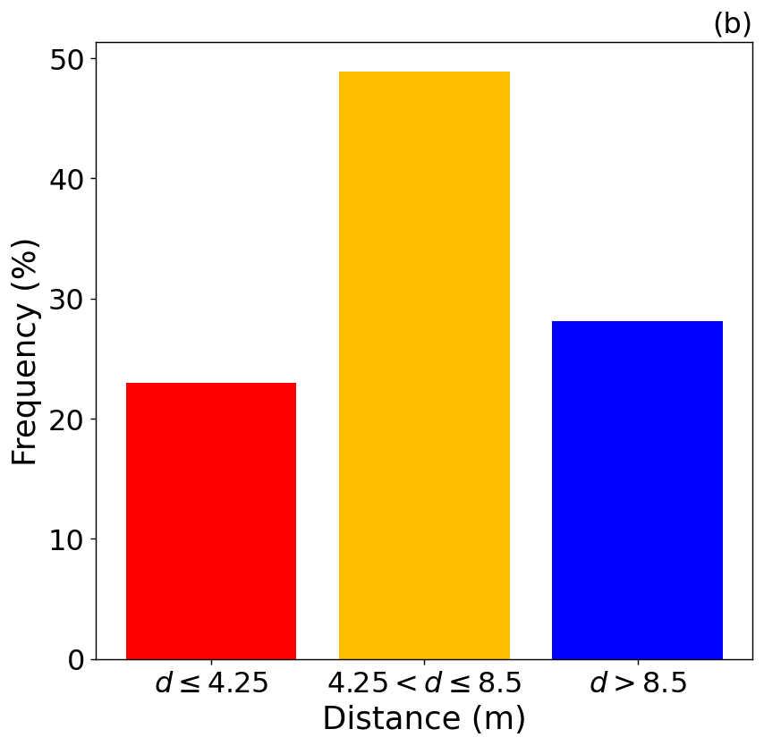
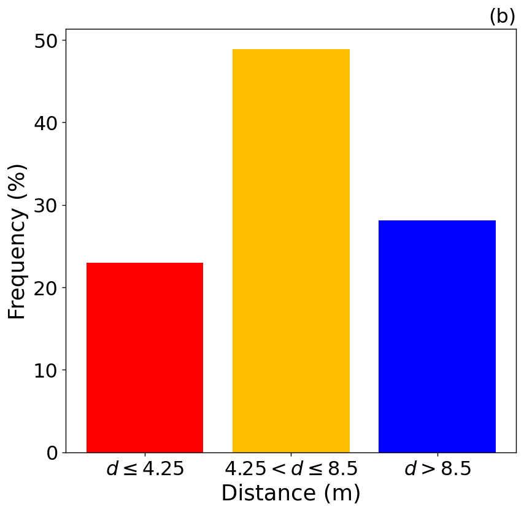

RADDISH
Particle Filters for ABMs
Progress Update
Patricia Ternes and Nick Malleson
Slides available at:
https://urban-analytics.github.io/dust/presentations.html
Overview
Aims / Vision
StationSim: Grand Central Station
Application of the Basic Particle Filter
Problem: Non-linear trajectories
(Temporary?) solutions: Hybrid PFs and Tempering
Future work ...
Aims
Overall aim of the work at Leeds: develop data assimilation methods that work with ABMs
Specifically: Experimenting with PFs for real-time crowd modelling
Can we create a particle filter that will allow us to do DA on an ABM?
Can we model a real pedestrian system (away from toy models)
Grand Central Terminal (New York)
Pedestrian traces
B. Zhou, X. Wang and X. Tang. (2012) Understanding Collective Crowd Behaviors: Learning a Mixture Model of Dynamic Pedestrian-Agents. In Proceedings of IEEE Conference on Computer Vision and Pattern Recognition (CVPR) 2012
http://www.ee.cuhk.edu.hk/~xgwang/grandcentral.html


StationSim GCS
Adaptation to older version of StationSim:
More realistic collisions
Calibrated on entrance times and maximum speeds from the data
Experimental setup

Parameters
Observed:
(x, y) locations of the pedestrians every n iterations
Latent:
Destination gate (inferred from the behaviour of the pedestrians)
'Known':
Maximum (desired) speed of the agents (given to the model)
Dimensionality: N agents ^ ~4 parameters
Preliminary Particle Filter Results
Box Environment: More particles = lower error

Difficulties (I)
Exponential increase in complexity

Preliminary Particle Filter Results
Grand Central Station: Filtering makes it worse!
No data assimilation. Entrance gate is known; speed and exit gate are unknown
Ternes, P., J. Ward, A. Heppenstall, V. Kumar, Le-Minh Kieu, N. Malleson (2020) Using data assimilation to reduce uncertainty in an agent-based pedestrian simulations in real time. Under review.
Preliminary Particle Filter Results
Grand Central Station: Filtering makes it worse!
With data assimilation - error increases!
Ternes, P., J. Ward, A. Heppenstall, V. Kumar, Le-Minh Kieu, N. Malleson (2020) Using data assimilation to reduce uncertainty in an agent-based pedestrian simulations in real time. Under review.
Difficulties (II)
Nonlinear trajectories
 

Possible solutions
Tempering
Reduce the number of particles required with more intelligent sampling
Hybrid PF
Initialise an ensemble
During the update step:
If a particle is chosen to be sampled out, only sample out the positions of the agents.
I.e. keep the destination gates
Therefore (hopefully) some particles will keep their correct gates
Preliminary Particle Filter Results
Improvements with a hybrid model
Other Methods (ongoing)
Ensemble Kalman Filter
Ward, Jonathan A., Andrew J. Evans, and Nicolas S. Malleson. (2016) Dynamic Calibration of Agent-Based Models Using Data Assimilation. Royal Society Open Science 3(4). DOI: 10.1098/rsos.150703.
Unscented Kalman Filter
Clay, Robert, Le-Minh Kieu, Jonathan A. Ward, Alison Heppenstall, and Nick Malleson (2020) Towards Real-Time Crowd Simulation Under Uncertainty Using an Agent-Based Model and an Unscented Kalman Filter’. In Advances in Practical Applications of Agents, Multi-Agent Systems, and Trustworthiness. The PAAMS Collection 12092:68–79. Lecture Notes in Computer Science. DOI:10.1007/978-3-030-49778-1_6.
Quantum Field Theory - Creation and Annihilation Operators
Tang, Daniel. (2019) Data Assimilation in Agent-Based Models Using Creation and Annihilation Operators. ArXiv:1910.09442 [Cs]. arxiv.org/abs/1910.09442.
Alan Turing Institute: AI UK Smart Cities
Simulating the City with AI
Agent-Based Modelling
Alison Heppenstall and Nick Malleson
University of Leeds and The Alan Turing Institute, UK
n.s.malleson@leeds.ac.uk
Slides available at:
https://urban-analytics.github.io/dust/presentations.html
RADDISH
Particle Filters for ABMs
Progress Update
Patricia Ternes and Nick Malleson
Slides available at:
https://urban-analytics.github.io/dust/presentations.html